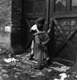
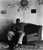
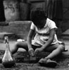
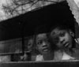
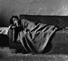
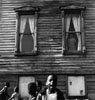
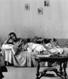
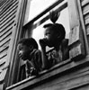
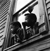

Photo Series: East Side, 1961-1963
Loading image. Please wait
East Side, 1961-1963 [photo ID: East_Side_001]
About This Series
As the Storefront Church series was coming to a conclusion, Milton decided to remain in the same area as the churches. He began to photograph homes and residents in the East Side of Buffalo, New York, a community which was predominantly African-American. One of the most loved of these images is the "Woman With Greens (East_Side_001)".
Related Publications
- From the Western Door to the Lower West Side, White Pine Press, 2009. Native American poet Eric Gansworth weaves his poetry with Milton Rogovin's Native American series.
- Milton Rogovin: The Lens & The Pen: Photography & Poems, Palisade Press 2009. At age 89, Milton Rogovin selected a number of his special photographs, wanting to express something more about his images.
- Picture Man: the Poetry of Photographer Milton Rogovin, [DVD] 19 min. 23 sec, 70 photographs, 17 poems, 2009. Milton, at age 89 years old, selected a number of his special images to write about, wanting to express in writing something more about his photographs.
- The Bonds Between Us: Family Portraits From Around The World, White Pine Press, 2001
- Milton Rogovin: The Forgotten Ones, University of Washington Press, 1985; Quantuck Lane Press, 2003
- Milton Rogovin: The Making of a Social Documentary Photographer, University of Washington Press and the Center for Creative Photography, September 30, 2006
  

    

East Side, 1961-1963 [photo ID: East_Side_001]
East Side, 1961-1963 [photo ID: East_Side_002]
East Side, 1961-1963 [photo ID: East_Side_003]
East Side, 1961-1963 [photo ID: East_Side_004]
East Side, 1961-1963 [photo ID: East_Side_005]
East Side, 1961-1963 [photo ID: East_Side_006]
East Side, 1961-1963 [photo ID: East_Side_008]
East Side, 1961-1963 [photo ID: East_Side_009]
East Side, 1961-1963 [photo ID: East_Side_011]
East Side, 1961-1963 [photo ID: East_Side_020]
East Side, 1961-1963 [photo ID: East_Side_021]
East Side, 1961-1963 [photo ID: East_Side_022]
East Side, 1961-1963 [photo ID: East_Side_023]
East Side, 1961-1963 [photo ID: East_Side_024]